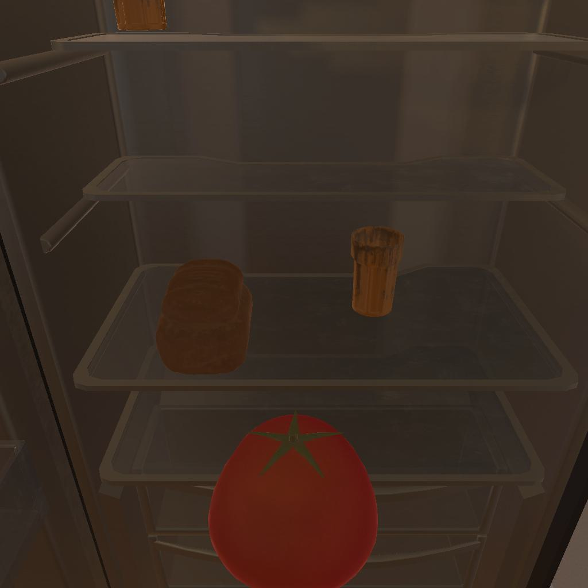

---------------------------------------------------------task: 13---------------------------------------------------------
--------------------------------------------------------------------------------------------------------------------------------------------------------------------
--------------------------------------------------------------------------------------------------------------------------------------------------------------------
Step:--------------------------------------------------------------------------5-------------------------------------------------------------------------------
----------------------------------------
VLM Prompt:
Image1:
Image2:
**Instruction**
1. Analyze the provided images to identify all visible household objects and compare the difference between images (e.h. whether the object is opened or not and taken on hand or not), focusing on those relevant to the task description "clean some tomato and put it in garbagecan."
2. Use the analysis of images and the task hint "The agent must find an object of the desired type, pick it up, go to a sink or a basin, clean the object with a sink or basin, and then find the correct location to place it and put it down there. The agent does not need to use soap bottle or faucet to clean the object, and the agent just needs to do action that is "clean the object with the sink or sink basin"." to answer the question: what is the most reasonable action in the choices for the task description "clean some tomato and put it in garbagecan"?
3. Decide and write the answer using the template: The answer is: (i): , where i is the real number. If there is no desired object in images, search every place based on **Initial Observation** to find the object. And if no one is exactly correct, choose a similar answer.
**Initial Observation**
You are in the middle of a room. Looking quickly around you, you can see countertop (1-2), cabinet (1-11), garbagecan (1), toaster (1), sinkbasin (1), fridge (1), sink (1), microwave (1), drawer (1-3), stoveburner (1-4), coffeemachine (1), diningtable (1)
**Answer Choices**
(1): go to countertop 1
(2): go to cabinet 1
(3): go to cabinet 2
(4): go to cabinet 3
(5): go to garbagecan 1
(6): go to cabinet 4
(7): go to toaster 1
(8): go to sinkbasin 1
(9): go to sink 1
(10): go to cabinet 5
(11): go to microwave 1
(12): go to countertop 2
(13): go to cabinet 6
(14): go to cabinet 7
(15): go to drawer 1
(16): go to stoveburner 1
(17): go to stoveburner 2
(18): go to cabinet 8
(19): go to drawer 2
(20): go to stoveburner 3
(21): go to stoveburner 4
(22): go to coffeemachine 1
(23): go to cabinet 9
(24): go to cabinet 10
(25): go to cabinet 11
(26): go to diningtable 1
(27): go to drawer 3
(28): close fridge 1
(29): put tomato 1 in/on fridge 1
(30): cool tomato 1 with fridge 1
(31): examine tomato 1
(32): examine fridge 1
**Answer**
Let's think step by step by following the instructions.
----------------------------------------
----------------------------------------
Original Response:
Firstly, by analyzing the provided images, we can identify the visible household objects inside the fridge: a loaf of bread, a tomato, and a wooden object that looks like a cup or container. There is no difference between Image1 and Image2; both show the same objects in the same state and position.
According to the task description "clean some tomato and put it in garbagecan," the most reasonable action would be to pick up the tomato, which is already visible in the fridge, go to a sink or a basin, clean the tomato, and then find a garbage can to put the tomato in. The task hint specifies that the agent does not need to use soap or a faucet, simply the action of "clean the object with the sink or sink basin."
Based on the **Initial Observation**, we know there is a sinkbasin (1) and a sink (1) available, as well as a garbagecan (1).
The most reasonable action for the task described would be to first go to the sink or sinkbasin to clean the tomato. Since the task does not specify which one to use and both are available, we can choose either. After cleaning the tomato, the next step would be to go to the garbagecan to put it in.
Therefore, the answer is:
(8): go to sinkbasin 1 or (9): go to sink 1 for cleaning the tomato, and then (5): go to garbagecan 1 to put the cleaned tomato in. Since we need to select one action, we'll go with the action of going to the sink basin as it is the first one mentioned in the task hint.
The answer is: (8): go to sinkbasin 1.
----------------------------------------
----------------------------------------
>>> Refine Original VLM Response and Get Pure Action: go to sinkbasin 1
----------------------------------------
-----------------------------------------------------------------
Running time: 17.476885080337524 seconds
Total Money: 5.943960000000003
-----------------------------------------------------------------
-----------------------------------------------------------------
Text Observation:You arrive at loc 7. On the sinkbasin 1, you see a faucet 1.
-----------------------------------------------------------------
UNSUCCEED